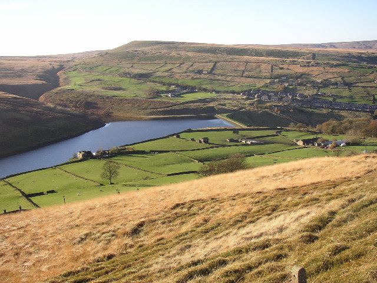

Marsden & Saddleworth
From the churchyard at St Chad’s to the terraces below Butterley Reservoir, follow four centuries of Bentley lives across the Pennines and beyond.

Discoveries from the records
When Jonas Bentley died, someone took an inventory of his belongings. The surviving abstract gives his home as Standedge.
See what the inventory tells us →Helen Bentley is remembered in the old churchyard by her married name, Ellin Platt. Her husband Thomas shared the stone.
Meet Helen and Thomas →Thomas Herbert was two when the census found him at Binn. His family remembers the terrace below the reservoir where he spent his last days.
Walk the road with the family →A court order sent a labourer named Mathewe Bentley to York Castle. Two generations shared his name, leaving a question in the court book.
Read the court story →Three of Charles Bentley’s brothers settled along Carlisle Street in Melbourne. Family notices give two of their houses names, Stockwell and Baroona.
Find the brothers on Carlisle Street →